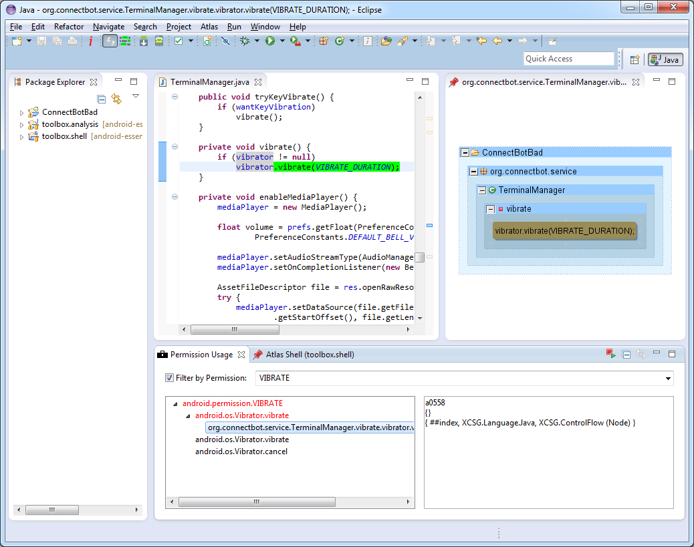

Setup
If you haven't already, install the Android Essentials Toolbox plugin into Eclipse.
Some example code exists in the sample example.analysis and example.shell projects. The example.analysis project contains Java examples that can be invoked on the sample example.shell Atlas Shell project.
git clone https://github.com/android-essentials-toolbox/android-essentials-toolbox.gitImport the example.analysis and example.shell projects into the Eclipse workspace. Navigate to Window>Show View>Other...>Atlas>Atlas Shell. Select the example.shell project and press OK. You should also import an Android Eclipse project. There are several open source projects compiled for API level 15 at https://github.com/benjholla/Android-Applications.
Navigate to Atlas>Manage Project Settings and ensure that only the Android Eclipse project is in the window on the right for projects to be indexed. Next index the Android application by pressing the Index Workspace button or navigating to Atlas>Index Workspace.
When indexing is complete, restart the Atlas Shell by pressing the red restart button in the Atlas Shell window. Apply an Android API level permission mapping by running the following command on the Atlas Shell. Replace 19 with your desired API level to be applied.
PermissionMapping.applyTags(19)Permission Usage View
To open the Permission Usage View navigate to Window>Show View>Other...>Atlas Toolbox>Permission Usage View. If the Permission Usage View was opened before the permission mapping was applied, you will need to refresh the view by pressing the red refresh button at the top right hand corner of the view.
By default the Permission Usage View shows used permissions in red, categorized by permission group and protection level. At the lowest level of the tree is the callsite of the application method that called the permission protected method. The Permission Usage View contains options for filtering by usage and collapsing nodes in the tree by pressing the filter buttons located in the top right hand corner of the view. You can also enable keyword searching by selecting the Filter by Permission checkbox.
Double clicking on a callsite in the Permission Usage View opens an Atlas graph window, which can be clicked to jump to the corresponding source code.
Running Examples
Import the example.analysis and example.shell projects into the Eclipse workspace as outlined in the Setup. To invoke the examples from the Atlas Shell project run the following commands. Assume that the workspace contains an indexed Android Eclipse project named ConnectBot.
var targetSDKVersion = Example0.getApplicationTargetSDKVersion("ConnectBot")
var success = Example0.applySDKPermissionMapping(targetSDKVersion)
var internetPermissionUsed = Example1.isPermissionUsed(Permission.INTERNET, targetSDKVersion)
var networkPermissionGroupUsed = Example2.isPermissionGroupUsed(PermissionGroup.NETWORK, targetSDKVersion)
var dangerousProtectionLevelUsed = Example2.isProtectionLevelUsed(ProtectionLevel.DANGEROUS, targetSDKVersion)
var usedPerms = Example3.getUsedPermissions("ConnectBot")
var unusedPerms = Example3.getUnusedPermissions("ConnectBot")
var overprivileged = Example4.isOverprivileged("ConnectBot")
var underprivileged = Example4.isUnderprivileged("ConnectBot")
Example 0: Applying a permission mapping
Before an application's permissions can be analyzed the Atlas program graph must be annotated (tagged) with a permission mapping. To do this we simply call PermissionMapping.applyTags(sdkVersion) with the Android API level (ex: 19) that we want to apply. The method below does this, but makes additional checks to see if the permission mapping is already applied and that the new permission mappings are successfully applied.
public static boolean applySDKPermissionMapping(int sdkVersion) throws Exception {
// check if the permission mapping has already been applied
String tagPrefix = PermissionMapping.getTagPrefix(sdkVersion);
if(!CommonQueries.nodesStartingWith(tagPrefix).eval().nodes().isEmpty()){
return true; // permission mapping has already been applied
}
// need to apply permission mapping
HashMap<Permission, AtlasHashSet<GraphElement>> permissionMapping = PermissionMapping.applyTags(sdkVersion);
// permission mapping is successful if for at least one permission, a tag was applied to the graph
boolean success = false;
for(Entry<Permission, AtlasHashSet<GraphElement>> mapping : permissionMapping.entrySet()){
if(mapping.getValue().size() > 0){
success = true;
break;
}
}
return success;
}
To avoid manually entering the API levels, we can use the AndroidManifest object's getMinSDKVersion(), getMaxSDKVersion(), or getTargetSDKVersion() to extract the appropriate API level from an Android Eclipse project's AndroidManifest.xml file.
public static int getApplicationTargetSDKVersion(String projectName) throws Exception {
// parse the manifest for the target sdk version
AndroidManifest manifest = new AndroidManifest(AndroidManifest.getManifestFile(projectName));
return manifest.getTargetSDKVersion();
}
Example 1: Permission analysis
Determining if a permission is used (if a direct CALL edge exists to the API protected method in the program graph from a method in the application) we can write a simple graph traversal.
Note that this definition excludes uses of permissions through Java Reflection, class loaders, native code, and shell processes (Runtime.exec).
public static boolean isPermissionUsed(Permission permission, int apiVersion) {
// create a subgraph of the complete program graph containing only call edges and the nodes attached to those edges
Q callEdges = Common.universe().edgesTaggedWithAny(Edge.CALL).retainEdges();
// get the permission protected API methods for the permission and version of Android
Q permissionProtectedMethods = PermissionMapping.getMethods(permission, apiVersion);
// get the calling methods of the permission protected API methods
Q permissionProtectedMethodCallers = callEdges.predecessors(permissionProtectedMethods);
// get the calling methods of the permission protected API methods that also exist in the Android app
Q permissionProtectedMethodAppCallers = permissionProtectedMethodCallers.intersection(SetDefinitions.app());
// return true if there are callers of the permission protected APIs in the Android app
return permissionProtectedMethodAppCallers.eval().nodes().size() != 0;
}
Example 2: Permission group and protection level analysis
Since the relationships between permissions and permission groups as well as permissions and protection levels is already encoded into the Android Essentials Toolbox, its trivial to extend our permission analysis to both permission groups and protection levels.
public static Collection<Permission> getUsedPermissionGroupPermissions(PermissionGroup permissionGroup, int apiVersion) {
Collection<Permission> usedPermissions = new LinkedList<Permission>();
// for each permission in the given permission group
for(Permission permission : permissionGroup.getPermissions()){
// check and add permission if it is used
if(Example1.isPermissionUsed(permission, apiVersion)){
usedPermissions.add(permission);
}
}
return usedPermissions;
}
public static Collection<Permission> getUsedProtectionLevelPermissions(ProtectionLevel protectionLevel, int apiVersion) {
Collection<Permission> usedPermissions = new LinkedList<Permission>();
// for each permission in the given protection level
for(Permission permission : protectionLevel.getPermissions()){
// check and add permission if it is used
if(Example1.isPermissionUsed(permission, apiVersion)){
usedPermissions.add(permission);
}
}
return usedPermissions;
}
Example 3: Finding used/unused application permissions
With support for parsing the requested permissions from an application's AndroidManifest.xml file, we can automatically detect used and unused permissions.
public static Collection<Permission> getUsedPermissions(String projectName) throws Exception {
// parse the manifest for the target sdk version and the requested permissions
AndroidManifest manifest = new AndroidManifest(AndroidManifest.getManifestFile(projectName));
int targetSDKVersion = manifest.getTargetSDKVersion();
Collection<Permission> requestedPermissions = manifest.getUsesPermissions();
// create a collection of unused permissions
Collection<Permission> usedPermissions = new LinkedList<Permission>();
for(Permission permission : requestedPermissions){
if(Example1.isPermissionUsed(permission, targetSDKVersion)){
usedPermissions.add(permission);
}
}
return usedPermissions;
}
public static Collection<Permission> getUnusedPermissions(String projectName) throws Exception {
// parse the manifest for the target sdk version and the requested permissions
AndroidManifest manifest = new AndroidManifest(AndroidManifest.getManifestFile(projectName));
int targetSDKVersion = manifest.getTargetSDKVersion();
Collection<Permission> requestedPermissions = manifest.getUsesPermissions();
// create a collection of unused permissions
Collection<Permission> unusedPermissions = new LinkedList<Permission>();
for(Permission permission : requestedPermissions){
if(!Example1.isPermissionUsed(permission, targetSDKVersion)){
unusedPermissions.add(permission);
}
}
return unusedPermissions;
}
Example 4: Analyzing over/under-privileged apps
Finally, if we wanted to replicate a tool similar to Berkeley's Stowaway tool for an application permission over/under-privileged study the implementation becomes straightforward by building on the previous examples.
public static boolean isOverprivileged(String projectName) throws Exception {
return !Example3.getUnusedPermissions(projectName).isEmpty();
}
public static boolean isUnderprivileged(String projectName) throws Exception {
// parse the manifest for the target sdk version and the requested permissions
AndroidManifest manifest = new AndroidManifest(AndroidManifest.getManifestFile(projectName));
int targetSDKVersion = manifest.getTargetSDKVersion();
Collection<Permission> requestedPermissions = manifest.getUsesPermissions();
// search for permissions that are used but not requested
for(Permission permission : Permission.allPermissions){
if(Example1.isPermissionUsed(permission, targetSDKVersion)){
if(!requestedPermissions.contains(permission)){
return true;
}
}
}
return false;
}